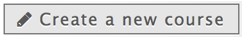
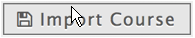
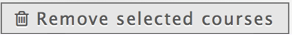
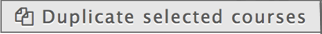

You can create and manage new learning modules in the course overview.
2.2 THE USER INTERFACE OF CREYOCO AT A GLANCE
Managing learning modules at a glance
|  | CREATE Enter the name of your learning module and confirm with “OK”. The new module is added to the list of course overview. |
|  | IMPORT Select the course file and click “Upload”. |
| SELECTION Click in the square next to the learning module. |
|
|  | REMOVE To delete a learning module, it must be selected. |
|  | DUPLICATE To double learning modules, they must be selected. |
Meaning of icons in the learning modules
Next to each learning module in the course overview there are other useful symbols:
|
PREVIEW The button has no effect, it has not been implemented yet. |
|
|
EXPORT The button has no effect, it has not been implemented yet. |